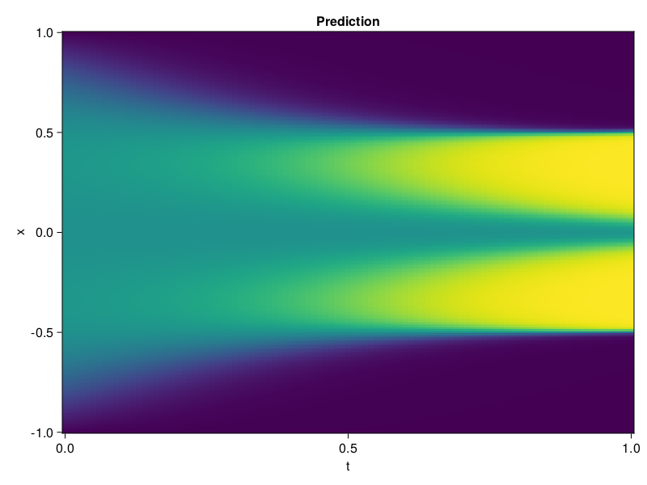

Allen-Cahn Equation with Sequential Training
In this tutorial we are going to solve the Allen-Cahn equation with periodic boundary condition from $t=0$ to $t=1$. The traning process is split into four stages, namely $t\in [0,0.25]$, $t\in [0.0,0.5]$, $t\in [0.0,0.75]$ and $t\in [0.0, 1.0]$.
using ModelingToolkit, IntervalSets
using Sophon
using Optimization, OptimizationOptimJL
@parameters t, x
@variables u(..)
Dₓ = Differential(x)
Dₓ² = Differential(x)^2
Dₜ = Differential(t)
eq = Dₜ(u(x, t)) - 0.0001 * Dₓ²(u(x, t)) + 5 * u(x,t) * (abs2(u(x,t)) - 1.0) ~ 0.0
domain = [x ∈ -1.0..1.0, t ∈ 0.0..0.25]
bcs = [u(x,0) ~ x^2 * cospi(x),
u(-1,t) ~ u(1,t)]
@named allen = PDESystem(eq, bcs, domain, [x, t], [u(x, t)])\[ \begin{align} - 0.0001 \frac{\mathrm{d}}{\mathrm{d}x} \frac{\mathrm{d}}{\mathrm{d}x} u\left( x, t \right) + 5 \left( -1 + \left|u\left( x, t \right)\right|^{2} \right) u\left( x, t \right) + \frac{\mathrm{d}}{\mathrm{d}t} u\left( x, t \right) =& 0 \end{align} \]
Then we define the neural net, the sampler, and the training strategy.
chain = FullyConnected(2, 1, tanh; hidden_dims=16, num_layers=4)
pinn = PINN(chain)
sampler = QuasiRandomSampler(500, (300, 100))
strategy = NonAdaptiveTraining(1, (50, 1))
prob = Sophon.discretize(allen, pinn, sampler, strategy)OptimizationProblem. In-place: true
u0: ComponentVector{Float64}(layer_1 = (weight = [0.924297034740448 1.41177237033844; 0.6140827536582947 1.7753875255584717; … ; -0.271879106760025 0.8174671530723572; 1.853420376777649 -1.7772493362426758], bias = [0.0; 0.0; … ; 0.0; 0.0;;]), layer_2 = (weight = [0.036644767969846725 0.17823217809200287 … 0.540181577205658 0.645248532295227; 0.4758889973163605 0.3493392765522003 … -0.23781287670135498 -0.5782710909843445; … ; -0.6589629650115967 -0.35252994298934937 … 0.3430531919002533 0.27242788672447205; 0.07694743573665619 0.45024144649505615 … -0.6433228254318237 0.5488541126251221], bias = [0.0; 0.0; … ; 0.0; 0.0;;]), layer_3 = (weight = [0.22610944509506226 0.5369480848312378 … -0.6517353653907776 0.6948249340057373; 0.7033125758171082 0.20164231956005096 … 0.6034398078918457 0.2826280891895294; … ; 0.03306988254189491 0.25052958726882935 … 0.4766201972961426 0.2542072832584381; -0.0044979192316532135 -0.1709752231836319 … -0.24098297953605652 0.40270838141441345], bias = [0.0; 0.0; … ; 0.0; 0.0;;]), layer_4 = (weight = [0.6907607913017273 0.2725752592086792 … -0.7080311179161072 0.45979613065719604; -0.3372703790664673 0.6320473551750183 … -0.5208491683006287 -0.3167845606803894; … ; 0.38299986720085144 0.41535577178001404 … -0.22365064918994904 -0.3961545526981354; 0.1704511046409607 0.4309064745903015 … 0.7163241505622864 -0.29501745104789734], bias = [0.0; 0.0; … ; 0.0; 0.0;;]), layer_5 = (weight = [0.25597137212753296 0.45819225907325745 … -0.10795530676841736 0.2833382785320282], bias = [0.0;;]))We solve the equation sequentially in time.
function train(allen, prob, sampler, strategy)
bfgs = BFGS()
res = Optimization.solve(prob, bfgs; maxiters=2000)
for tmax in [0.5, 0.75, 1.0]
allen.domain[2] = t ∈ 0.0..tmax
data = Sophon.sample(allen, sampler)
prob = remake(prob; u0=res.u, p=data)
res = Optimization.solve(prob, bfgs; maxiters=2000)
end
return res
end
res = train(allen, prob, sampler, strategy)u: ComponentVector{Float64}(layer_1 = (weight = [1.343479354178586 0.5621144591498906; 1.2206441708870717 1.4116077707905919; … ; -0.17212203111742594 0.6462980269138969; 2.372785171342415 -1.5875328029355207], bias = [-0.3423899840121044; -1.7094450260761582; … ; -0.2197088036427251; 0.29881161098688974;;]), layer_2 = (weight = [0.16613870397228447 0.4843867809086524 … 0.6808622397757994 0.786139264785135; 0.5286329683871055 0.9477151705608365 … 0.11068946026501413 0.033304320376356215; … ; -0.7047847035530995 -0.6236584565235015 … 0.1837695387016381 0.7211329047565956; -0.04198012242839573 0.6394597787630554 … -0.6397237614267609 0.1879045941689019], bias = [0.172228799062082; -0.24402558304214522; … ; -0.016089837939931267; -0.5331092810972509;;]), layer_3 = (weight = [0.6670947158715026 1.1072224689646786 … -0.43777652146070023 1.0430475672933337; 0.6289330712000079 0.8023237322967038 … 0.7645908186297076 0.09759893532527575; … ; 0.6359630850820415 0.3302489503882413 … 1.026064564517949 0.072061090411426; 0.41634403875755377 -0.6570006209720342 … -0.6076035068812964 0.7688955788361306], bias = [-0.6553732103698329; 0.11772138110861785; … ; 0.3548459998142687; -0.3310948394536112;;]), layer_4 = (weight = [0.8524625747767851 0.0006223131677363259 … -0.6150518839731152 0.5140104385610539; -0.34482610501496286 0.5652307925474673 … -0.43189078005925313 -0.9710312001353291; … ; 0.6392991426628453 0.18734763684035816 … -0.5298679275432036 -0.2733598596402241; 0.15166401944830987 0.5474008291490369 … 0.7461811689812402 -0.2862478746732216], bias = [-0.4674834428518961; 0.21017603423973658; … ; -0.08278983639739602; 0.0232220405183948;;]), layer_5 = (weight = [0.5605790583925541 0.5843707939904756 … -0.18446109106133476 0.11044075168716085], bias = [-0.2853737781446601;;]))Let's plot the result.
using CairoMakie
phi = pinn.phi
xs, ts = [infimum(d.domain):0.01:supremum(d.domain) for d in allen.domain]
axis = (xlabel="t", ylabel="x", title="Prediction")
u_pred = [sum(pinn.phi([x, t], res.u)) for x in xs, t in ts]
fig, ax, hm = heatmap(ts, xs, u_pred', axis=axis)